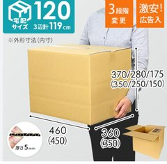
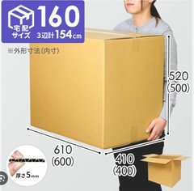

料金表Price List
航空便Air Freight
日本 → カンボジアJapan → Cambodia
| 料金Price |
1㎏あたり 38ドル$38 per kg |
特徴:Features: お急ぎの場合や冷蔵・冷凍など温度管理が必要な商品のご利用に最適です。 Ideal for urgent shipments or goods requiring temperature control such as refrigerated/frozen items.
内容:Includes: 国際輸送費、輸出入通関手続き費用、カンボジア国内配送費用（プノンペン市内のみ）込み International shipping, export/import customs procedures, and domestic delivery within Phnom Penh.
スケジュール:Schedule: 月曜日午前中までに当社倉庫へ到着 → 火曜日の午後にお届け（カンボジアの祝日を除く）。 Arrival at our warehouse by Monday morning → Delivery on Tuesday afternoon (excluding Cambodian holidays).
カンボジア → 日本Cambodia → Japan
| 料金Price |
1㎏あたり 18ドル（ミニマムチャージ 108ドル／最低6㎏分）$18 per kg (Minimum charge: $108 / min. 6kg) |
特徴:Features: お急ぎの場合や、テストマーケティングとして日本に商品を送りたい場合に最適です。 Ideal for urgent shipments or sending products to Japan for test marketing.
内容:Includes: 国際輸送費 International shipping only.
別途（必要に応じて）:Additional fees (as applicable):
-
輸入通関サービスフィー：300ドル
※関税法・関税定率法に基づき通関手続きが必要と判断された場合
Import customs service fee: $300
※Required when customs clearance is deemed necessary under customs law.
-
超過個口：1個あたり 100ドル
※3個以上の場合
Additional packages: $100 per package
※For 3 or more packages.
船便Sea Freight
小口輸送Small Lot (LCL)
| 120サイズ以下Up to 120cm size |
1箱 65ドル$65 per box |
 |
| 160サイズ以下Up to 160cm size |
1箱 150ドル$150 per box |
 |
| 0.5m³ 以上0.5m³ or more |
480ドル
（以降0.1m³あたり 96ドル）
$480
(then $96 per additional 0.1m³)
|
※0.5m³を超えるお荷物の体積計算につきましては、小数点第2位以下を切り上げて算出いたします。（例：0.53m³ → 0.6m³として計算）
*For shipments exceeding 0.5m³, volume is calculated by rounding up to one decimal place. (e.g. 0.53m³ is calculated as 0.6m³)
※荷物の安全面を考慮し、160サイズを超える大きさのお荷物（200サイズ等）は受付を終了させていただきました。
*For safety reasons, we no longer accept packages larger than 160cm size (e.g. 200cm size).
※お荷物が0.5CBM以上になる場合、送付先の変更や搬入日時の個別指定をさせていただく場合がございます。申込締切日に関わらず、事前に当社までご相談ください。
*For shipments of 0.5CBM or more, we may need to change the delivery destination or specify an individual drop-off date and time. Please contact us in advance, regardless of the application deadline.
大口輸送Large Lot (FCL)
| 2m³ 以上2m³ or more |
要相談Please Inquire |
特徴:Features: 液体物や金属加工品など、密度の高い商品を送る場合にコストメリットが大きいです。 Highly cost-effective for sending high-density items such as liquids and metal products.
スケジュール（原則）:Schedule (standard cycle):
- 積み込み: 毎月最終金曜日Loading: Last Friday of each month
- 申込締切り: 積み込み日の4営業日前Application Deadline: 4 business days before the loading date
- 出港: 積み込み日翌週の木曜日Departure: Thursday of the week following the loading date
- 臨時便: 物量に応じて対応する場合もございますSpecial Shipments: May be available depending on cargo volume
※上記は原則のスケジュールです。実際の申込締切日・お荷物受付期間は月によって異なります。各便の確定日程はお知らせおよび公式LINEにてご案内いたします。
*The above is our standard cycle. Actual application deadlines and drop-off periods vary from month to month. Confirmed dates for each shipment are announced in the News section and on our Official LINE account.